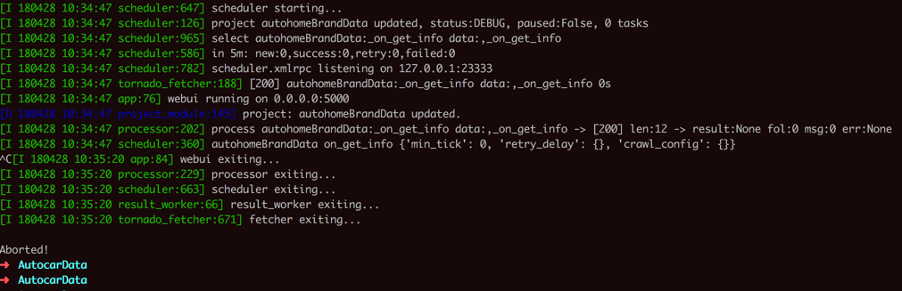
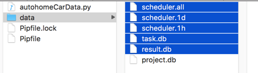
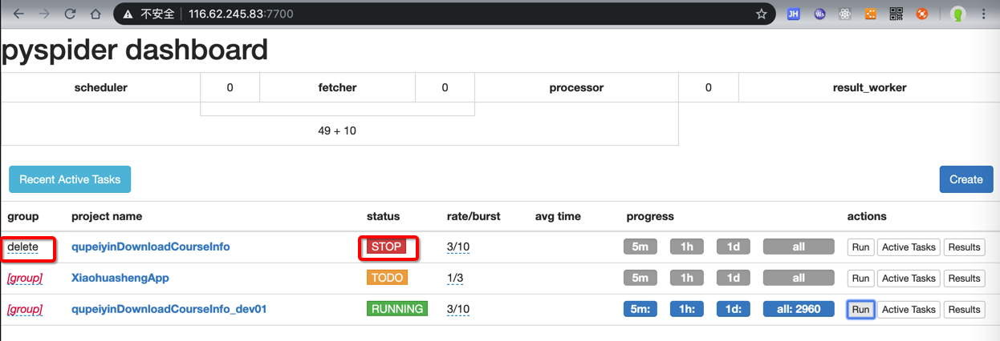
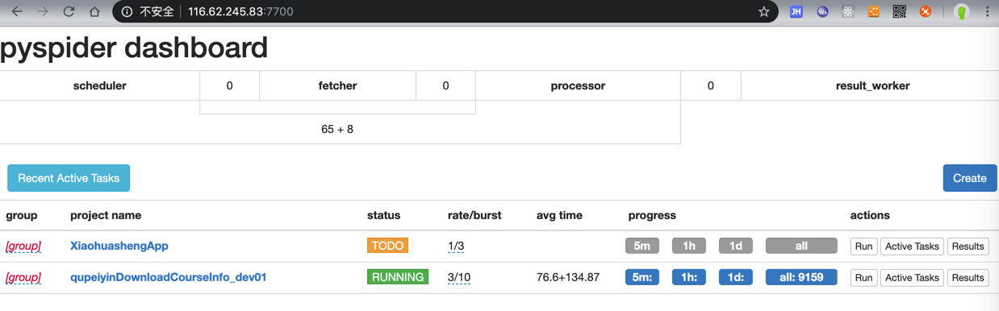

删除项目
如何清除之前的或正在运行的任务
对于一个写好的爬虫，且已经点击Run运行，或者运行了一段时间后，主动停止了。
接着想要去删除之前下载的数据，则：
官网的解释是：
设置group为delete，以及status为STOP后，过了(默认)24小时后，会自动删除该项目所有信息。
但是往往没法满足我们需求：
我不想要等待，只想现在就去：删除掉所有的信息，包括之前已经爬取的数据，之前的调度的任务等等数据。
经过一番研究后，发现了解决方案：
- 先去停止项目
- WebUI中设置
status为STOP - 终端中用
Control+C强制停止pyspider的运行- 
- WebUI中设置
- 再去删除文件：
result.db和task.db- 如果还有任务相关的
scheduler.all，scheduler.1d，scheduler.1h，则一并删除- 
- 如果还有任务相关的
不要轻易在没备份代码情况下删除project.db
注意不要删除，保存了项目（配置和）代码的：project.db，否则代码就没了。（我最开始就这么干过，😂）
之后去重新运行pyspider，再去刷新WebUI界面：
即可看到干净的项目，没有了之前的任务和数据了。
指定多久之后删除项目，即指定项目删除等待时间
PySpider中的项目，想要删除：
默认逻辑是，status设置为STOP（如果有group，那么group的status也要设置为delete），再等24小时后，才会自动删除
但是往往我们不想要等待那么久
想要指定删除的时间，则有2种方式去设置参数。
举例说明，比如想要30秒后删除，则可以：
- 文件：
config.json：设置scheduler的delete_time参数"scheduler": { "delete_time": 30 } - 命令行传入：
scheduler.DELETE_TIMEpyspider -c config.json scheduler --delete-time=30
然后WebUI中设置
status是STOPgroup设置为delete

然后过了30秒后，去刷新，该项目就被删除了，看不到了：
